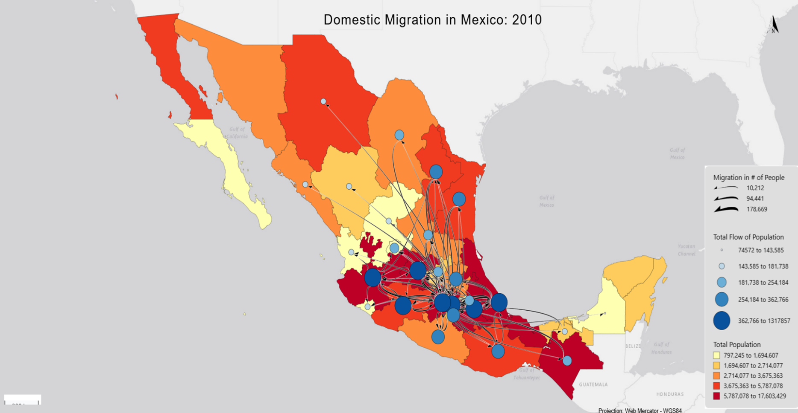

For areas that attract the most flows, we can see that the central part of Mexico, mainly the states of Mexico City, and Mexico are the two that appear to have the most incoming flows. This makes sense, as it is the most populated place in the country, being home to the capital, Mexico City, which probably provides those who emigrate to it better work/life opportunities. Another, but smaller, state that receives a noticeable amount of flows would be Nuevo Leon, which is home to Monterrey, which has about 1.1 million inhabitants and metro area of 5.3 , and likely offers many of the same opportunities as Mexico City, on a smaller scale if the biggest city isn’t your thing. For states that send the most flows, one of them would be Mexico City and Mexico (state). Just as people are moving to the city, others decide to leave for whatever their reason. The more people, the more movement of people. Another state that has a lot of flows leaving it would be the state of Veracruz along the gulf coast. This could be due to economic insecurity or abundance of violence or a combination of both.
For the general direction of flow, we see that one of the main trends depicted in the map would be the flow of people to the center of the country, the states that border the Mexico City metro area. Like I mentioned before, this is most likely due to Mexico City and the central portion of Mexico being more developed in general. A secondary flow that is visible in the flow map is the movement of people going north from the center part of Mexico. This is most notable in the states of Nueva Leon, Chihuahua, Tamaulipas, and Coahuila. There is a lot of movement north that can be seen, but not quite at the rates of people heading towards the central region. The movement towards the north could be due to factors such as lower cost of living and a more traditional lifestyle. The proximity to the US is also appealing for those trying to acquire work visas.
The flows show a relationship between the node and choropleth values. This is seen as many of the states with a high population also tend to have a larger node, indicating higher levels of the movement of people to that state. We can then see many of these states also have a large amount of incoming and outgoing flows. For example, the state of Mexico has a high population, large node, and many and thicker incoming flows, showing that the state is a major attractor of population. The other region that I talked about, the north, has lower, but still significant populations. They also have smaller but still significant total flow of people, but has a stronger pull factors such as industrial/manufacturing work opportunities that attract people there. Because of this, the flow map shows a strong correlation between population size, demonstrated by the choropleth base map, flow activity (nodes), and migration sizes (flow thickness). States that haver higher populations tend to be major attractors of movement, while regions that have certain specialization/desired attributes attract flow even though they have smaller populations.